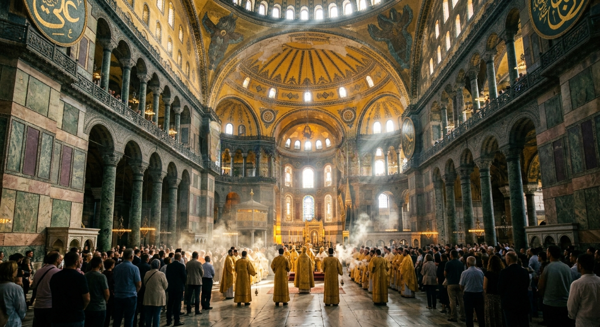
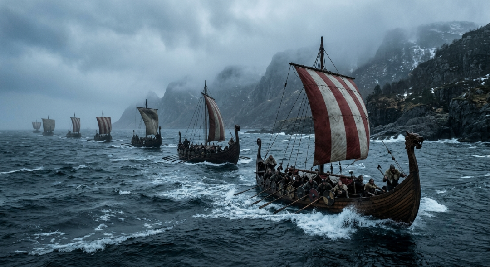
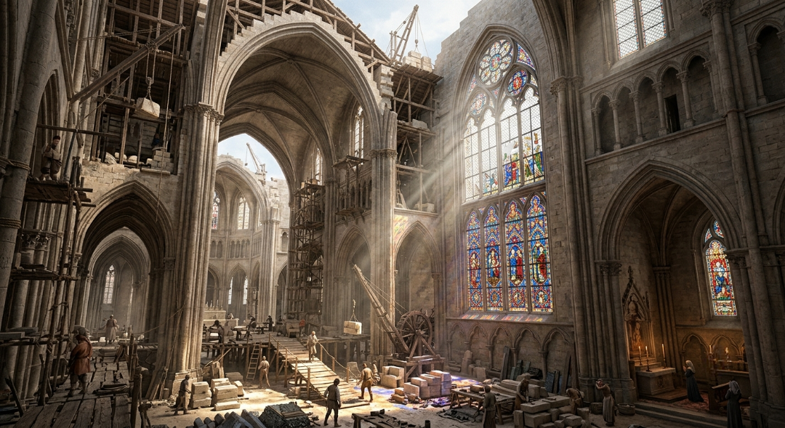
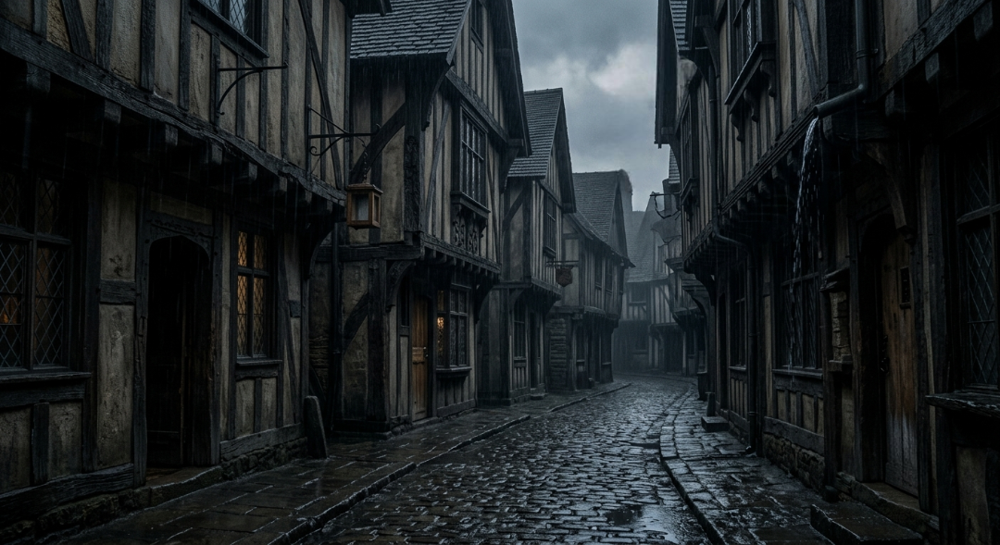
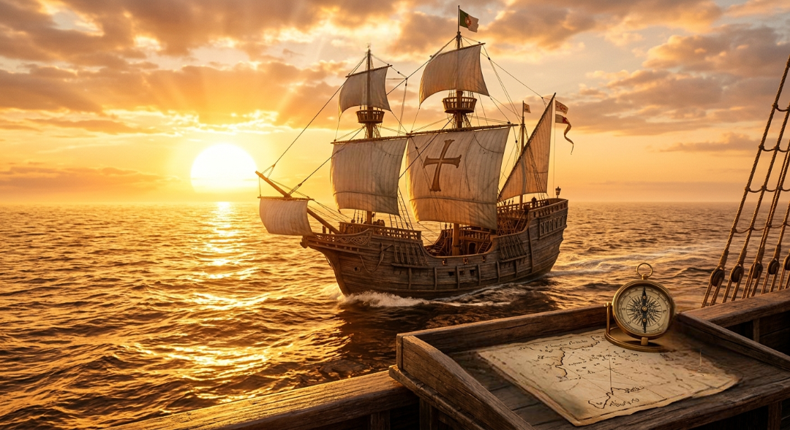

Новий Рим над Босфором (476-1054 рр.)
У той час як Західна Римська імперія назавжди потонула в хаосі Великого переселення народів, її східна половина не просто вижила, а перетворилася на наймогутнішу, найбагатшу та найбільш витончену державу раннього Середньовіччя — Візантійську імперію. Із столицею у Константинополі, який був стратегічно збудований на перетині найважливіших торгових шляхів між Європою та Азією, Візантія стала унікальним плавильним котлом. Вона поєднала в собі суворе римське державне право, глибоку грецьку культуру та містичну християнську духовність, створивши небачений раніше тип цивілізації.
Своєї найвищої величі імперія досягла за правління імператора Юстиніана Першого, який поставив собі за мету повернути всі втрачені римські землі. Його геніальні полководці відвоювали Італію, Північну Африку та південь Іспанії, а сам імператор увічнив своє ім'я реформою законодавства та будівництвом грандіозного собору Святої Софії — справжнього архітектурного дива, чий колосальний купол ніби парив у повітрі над містом. Візантійські майстри довели до абсолютного ідеалу мистецтво золотої мозаїки та іконопису, змушуючи іноземних послів вірити, що вони потрапили прямо на небеса під час імператорських прийомів.
Проте Візантія була змушена вести безперервну, виснажливу війну на два фронти, стримуючи навали слов'ян і германців з півночі та потужний наступ Арабського халіфату з півдня. Саме Константинополь протягом багатьох століть служив надійним "залізним щитом" для Європи, приймаючи на себе основні удари східних кочівників та завойовників. Поступове віддалення від Заходу, що завершилося Великим розколом християнської церкви у 1054 році на католицизм та православ'я, остаточно відокремило Візантію, перетворивши її на самобутній, величний, але все більш ізольований світ.

Візантійський щит
Час розквіту Східної Римської імперії, яка зберегла античну спадщину, створила культуру і захищала Європу зі сходу.
Темні віки та морські королі (5 - 10 століття)
Раннє Середньовіччя, яке довгий час помилково називали "Темними віками", насправді було періодом бурхливого формування нової європейської географії та культури. На уламках римських провінцій вожді германських племен створювали свої перші династії, серед яких найуспішнішими стали франки. Їхній найвеличніший правитель Карл Великий у 800 році був проголошений імператором Заходу, зумівши на короткий час об'єднати території сучасної Франції, Німеччини та Італії. Він започаткував "Каролінгське відродження" — епоху, коли при монастирях почали масово відкриватися школи, відроджуватися латина та копіюватися стародавні рукописи.
Проте спокій тривав недовго. Наприкінці 8 століття Європа здригнулася від раптової і нещадної загрози з півночі — почалася епоха вікінгів. Скандинавські мореплавці на своїх унікальних безкільових кораблях — драккарах — могли заходити на мілководдя і підніматися глибоко вгору за течією річок, грабуючи беззахисні монастирі та міста в самому серці континету. Вони наводили жах на все узбережжя від Британії до Піренеїв, змушуючи європейських королів будувати перші оборонні укріплення та переглядати тактику ведення війни.
Але вікінги були не лише жорстокими розбійниками, а й геніальними торговцями, колонізаторами та першовідкривачами, які проклали шлях "із варяг у греки" і заселили далеку Ісландію та Гренландію. Саме в цей суворий період уся Європа почала стрімко покриватися мережею феодальних замків, оскільки місцеві жителі потребували негайного захисту від раптових нападів. Раннє Середньовіччя викувало нову військову еліту — лицарство, і перетворило церкву на єдиний надійний інститут стабільності та збереження знань у роздробленому світі.

Північний шторм
Епоха формування перших середньовічних імперій Заходу та експансій вікінгів, що змусили Європу будувати перші замки.
Хрестові походи та розквіт готики (11 - 13 століття)
Високе Середньовіччя стало часом максимального внутрішнього та зовнішнього піднесення феодальної Європи, коли міста знову почали зростати, а населення стрімко збільшувалося завдяки покращенню клімату та сільського господарства. Ця епоха назавжди закарбувалася в пам'яті людства як доба Хрестових походів, які розпочалися у 1095 році за закликом Папи Римського Урбана Другого. Тисячі лицарів, ремісників та бідняків під знаком хреста рушили на Близький Схід, щоб відвоювати Єрусалим, що призвело до масштабного і кривавого зіткнення, але водночас і до грандіозного культурного обміну між християнським та мусульманським світами.
У європейських містах розпочалася справжня архітектурна революція — на зміну похмурому і масивному романському стилю прийшла велична, невагома готика. Завдяки винаходу стрільчастої арки та системи зовнішніх підпор (контрфорсів), стіни храмів більше не мали бути товстими й глухими. Вони перетворилися на гігантські мереживні рами для розкішних кольорових вітражів, крізь які всередину соборів лилося різнокольорове божественне світло. Такі шедеври, як Нотр-Дам де Парі чи Шартрський собор, будувалися поколіннями і ставали символами міської гордості.
Саме у Високому Середньовіччі остаточно сформувався класичний кодекс лицарської честі, культ Прекрасної Дами та поезія трубадурів, які романтизували військову професію. Одночасно з цим у Парижі, Болоньї та Оксфорді відкрилися перші університети, де панувала схоластика — філософія, що намагалася логічно обґрунтувати релігійні догмати. Європа перетворилася на зрілу, впевнену в собі цивілізацію з розвиненою торгівлею, потужними гільдіями ремісників та унікальною культурою, яка повністю вийшла з колишньої замкнутості темних часів.

Золота готика
Епоха Хрестових походів, заснування перших європейських університетів та будівництва величних готичних соборів.
Чорна смерть та столітні війни (14 - 15 століття)
Пізнє Середньовіччя стало часом апокаліптичних випробувань, системної кризи та радикальної перебудови всього середньовічного суспільства, через що цей період часто називають "осенню Середньовіччя". Все почалося з різкого похолодання клімату, яке викликало Великий голод, але справжній жах прийшов у 1346 році з глибин Азії — пандемія бубонної чуми, відома як "Чорна смерть". За кілька років страшна хвороба викосила від третини до половини всього населення Європи, залишаючи порожніми цілі села та міста й повністю руйнуючи звичну структуру феодальної економіки.
Катастрофу поглиблювали безперервні, виснажливі військові конфлікти, найвідомішим з яких стала Столітня війна між Англією та Францією. Ця війна назавжди змінила характер бойових дій: поява англійських довгих луків, а згодом і першої вогнепальної зброї та артилерії зробила важку лицарську кінноту безпорадною на полі бою. Саме в цьому кривавому протистоянні народився образ Жанни д'Арк, а європейські королі почали відмовлятися від ненадійних лицарських ополчень на користь регулярних професійних армій, що фінансувалися за рахунок загальних податків.
Величезні людські втрати від чуми раптово призвели до подорожчання селянської праці: виживші отримали більше прав, а жорстока кріпосна залежність у Західній Європі почала стрімко руйнуватися. Попри релігійний фанатизм та відчай, викликані кризою, Пізнє Середньовіччя заклало основу для майбутнього модерну. Стара феодальна роздробленість почала поступатися місцем першим централізованим національним державам, готуючи європейську цивілізацію до грандіозного інтелектуального та географічного прориву.

Осінь Середновіччя
Час потрясінь: пандемія Чорної смерті, Столітня війна та знищення класичних феодальних систем на користь звичайних армій.
Відродження людини та підкорення океанів (15 - 17 століття)
XV століття принесло з собою дві події, які остаточно підвели риску під середньовічною історією і відкрили двері в Новий час: падіння Константинополя під ударами османів у 1453 році та винахід друкарського верстата Йоганном Гутенбергом. Потік візантійських вчених-біженців привіз до Італії унікальні давньогрецькі рукописи, що спровокувало вибух інтелектуальної революції — Епоху Відродження (Ренесансу). В центрі всесвіту замість суворого середньовічного догматизму опинилася людина, її розум, краса та земний потенціал, що породило філософію гуманізму та шедеври Леонардо да Вінчі, Мікеланджело та Рафаеля.
Друкарство дозволило знанням поширюватися з неймовірною швидкістю, вириваючи монополію на освіту з рук церкви, а розвиток астрономії та математики змусив людей по-новому поглянути на карту світу. Оскільки старі сухопутні торгові шляхи до багатств Азії були повністю перекриті Османською імперією, європейські монархії спрямували свій погляд в океан. Це започаткувало Епоху Великих географічних відкриттів, коли нові типи кораблів — каравели, оснащені косими вітрилами для плавання проти вітру, вийшли у відкритий, невідомий Атлантичний океан.
У 1492 році Христофор Колумб, шукаючи західний шлях до Індії, випадково натрапив на береги Нового Світу — Америки, а за кілька років Васко да Гама успішно обігнув Африку і досяг справжньої Індії. Подорож Фернана Магеллана остаточно довела кулястість Землі, об'єднавши планету в єдину глобальну систему торгових та політичних зв'язків. Ренесанс та відкриття океанів назавжди розбили замкнутий, провінційний світогляд Середньовіччя, запустивши процес всесвітньої модернізації, наукового прогресу та колоніального будівництва Нового часу.

Епоха відкриттів
Інтелектуальний вибух Гуманізму, винахід друкарства та перші трансокеанські плавання Колумба, що об'єднали планету в єдиний світ.